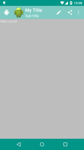

今年(2014) 的 google i/o 发表令多数人为之一亮的 material design，而 google 也从「google i/o 2014」 开始，大家也陆陆续续地看到其更新的 android app 皆套用了这个设计介面。当然，这个设计介面著实让大家感到惊艳外，更让 android 开发者开始担心未来 app 的界面处理了。
不过，所幸有着之前 actionbar 的经验后，android 也很快地在 support library 里面提供了相对应的 api 给开发者使用，本篇就为各位介绍 – toolbar，这是用来取代过去 actionbar 的控件，而现在于 material design 中也对之有一个统一名称：app bar，在未来的 android app 中，就以 toolbar 这个元件来实作之。

1. 概述
Android 3.0 Android 推了 ActionBar 这个控件，而到了2013 年 Google 开始大力地推动所谓的 android style，想要逐渐改善过去 android 纷乱的界面设计，希望让终端使用者尽可能在 android 手机有个一致的操作体验。ActionBar 过去最多人使用的两大套件就是 ActionBarSherlock 以及官方提供在 support library v 7 里的 AppCompat。
既然会有本篇跟各位介绍的 Toolbar，也意味着官方在某些程度上认为 ActionBar 限制了 android app 的开发与设计的弹性，而在 material design 也对之做了名称的定义：App bar。接下来将为各位分成几个阶段进行说明，如何在 android app 中用 toolbar 这个控件来做出一个基本的 app bar 喽。
本篇所使用到的程序请到 Github 取得。
2. 基础套用
这个阶段从 toolbar_demo_checkpoint0 开始，分成下列三个部份：
风格 (style)
界面 (layout)
程序 (java)
2.1 风格(style)
风格要调整的地方有二
一在 res/values/styles.xml中
2.2 界面(Layout)
在 activity_main.xml 里面添加 Toolbar 控件：
请记得用 support v7 里的 toolbar，不然然只有 API Level 21 也就是 Android 5.0 以上的版本才能使用。
这里需注意，要将 RelatvieLayout 里的四个方向的padding 属性去掉，并记得将原本的 Hello World 设为 layout_below="@+id/toolbar" ，否则会看到像下面这样的错误画面。

声明后，再将之用 setSupportActionBar 设定，Toolbar即能取代原本的 actionbar 了，此阶段完成画面如下：

3. 自定义颜色(Customization color)

上图是将本阶段要完成的结果画面做了标示，结合下面的描述希望大家能明白。
- colorPrimaryDark（状态栏底色）：在风格 (styles) 或是主题 (themes) 里进行设定。
- App bar 底色
- 这个设定分为二，若你的 android app 仍是使用 actionbar ，则直接在风格 (styles) 或是主题 (themes) 里进行设定 colorPrimary 参数即可；
可若是采用 toolbar 的话，则要在界面 (layout) 里面设定 toolbar 控件的 background 属性。 - navigationBarColor（导航栏底色）：
仅能在 API v21 也就是 Android 5 以后的版本中使用， 因此要将之设定在 res/values-v21/styles.xml 里面。
- 主视窗底色：windowBackground
再来是 v21 的style中 (res/values-v21/styles.xml)
- <style name="AppTheme" parent="AppTheme.Base"> <!--Navigation bar color--> <item name="android:navigationBarColor">@color/accent_material_light</item></style>
最后，就是为了本篇的主角 – Toolbar 的 background 进行设定。
- <android.support.v7.widget.Toolbar android:id="@+id/toolbar" android:layout_height="?attr/actionBarSize" android:layout_width="match_parent" android:background="?attr/colorPrimary" > </android.support.v7.widget.Toolbar>
在本范例中，toolbar 是设定来在 activity_main.xml，对其设定 background 属性： android:background="?attr/colorPrimary" ，这样就可以使之延用 Actionbar 的颜色设定喽。
最后，再来看一下结果画面。

4. 控件 (component)

大抵来说，预设常用的几个元素就如图中所示，接着就依序来说明之：
- setNavigationIcon
即设定 up button 的图标，因为 Material 的介面，在 Toolbar这里的 up button样式也就有別于过去的 ActionBar 哦。
- setLogo
APP 的图标。 - setTitle
主标题。 - setSubtitle
副标题。 - setOnMenuItemClickListener
设定菜单各按鈕的动作。
先来看看菜单外的代码，在 MainActivity.java 中：
- Toolbar toolbar = (Toolbar) findViewById(R.id.toolbar);
- // App Logo
- toolbar.setLogo(R.drawable.ic_launcher);
- // Title
- toolbar.setTitle("My Title");
- // Sub Title
- toolbar.setSubtitle("Sub title");
- setSupportActionBar(toolbar);
- // Navigation Icon 要設定在 setSupoortActionBar 才有作用// 否則會出現 back button
- toolbar.setNavigationIcon(R.drawable.ab_android);
这边要留意的是setNavigationIcon需要放在 setSupportActionBar之后才会生效。
菜单部分，需要先在res/menu/menu_main.xml左定义：
将onMenuItemClick监听者设置给toolbar
和 setNavigationIcon 一样，需要將之设定在 setSupportActionBar 之后才有作用。执行上面的代码便会得到下面的界面。

完完整程序见：toolbar_demo_checkpoint3
5. 总结
在这样的架构设计下，ToolBar直接成了Layout中可以控制的东西，相对于过去的actionbar来说，设计与可操控性大幅提升。
本文上面的解释中用到的完成代码：toolbar demo check point 0 ~ 4，请到Github 取得。
最后再附上一个界面上常用的属性说明图：

这里按照图中从上到下的顺序做个简单的说明：
- colorPrimaryDark
- 状态栏背景色。
- 在 style 的属性中设置。
- textColorPrimary
- App bar 上的标题与更多菜单中的文字颜色。
- 在 style 的属性中设置。
- App bar 的背景色
- Actionbar 的背景色设定在 style 中的 colorPrimary。
- Toolbar 的背景色在layout文件中设置background属性。
- colorAccent
- 各控制元件(如：check box、switch 或是 radoi) 被勾选 (checked) 或是选定 (selected) 的颜色。
- 在 style 的属性中设置。
- colorControlNormal
- 各控制元件的预设颜色。
- 在 style 的属性中设置
- windowBackground
- App 的背景色。
- 在 style 的属性中设置
- navigationBarColor
- 导航栏的背景色，但只能用在 API Level 21 (Android 5) 以上的版本
- 在 style 的属性中设置
最后需要注意的是：使用material主题的时候，必须设定targetSdkVersion = 21，否则界面看起来是模糊的